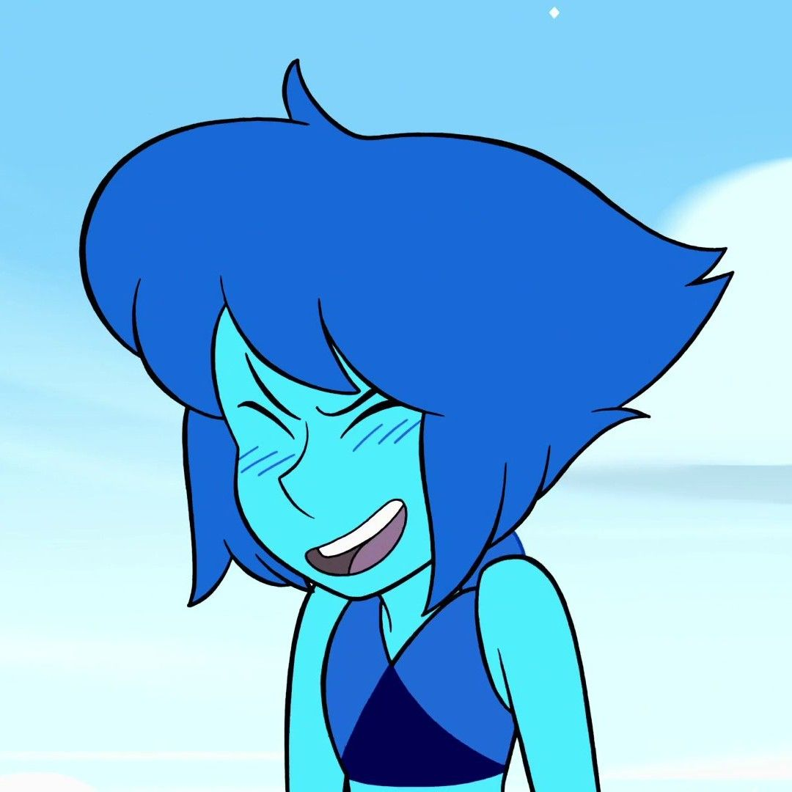

About Lapis
Lapis is a homeworld gem who can control water and fly with her aquatic wings
Lapis and her friends
Lapis' Characteristics
- She's got blue hair
- She fled Homeworld
- She can control water
Lapis'Friends
Lapis's best friend is Peridot. They live on a farm and make art together. Check out the links below to read more about them